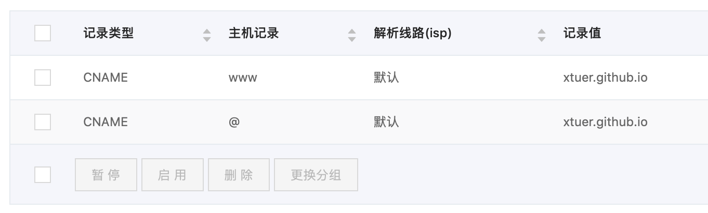

使用 Hexo 来搭建自己的个人静态博客:
- Markdown 写博客
- Hexo 生成 HTML
- Hexo 发布 HTML 到 Github Pages
既然是静态博客，那么就没有后台了，留言功能可以使用第三方的服务，例如畅言。
Install Node
Hexo 需要 Node
- Mac 安装 Node，可以使用 Homebrew 安装:
brew install node - Windows 安装 Node，进入 https://nodejs.org/en/ 下载安装
Node 就是 Node.js
使用 Node 的淘宝镜像
由于网络的问题，访问 Node 的默认仓库有可能会很慢，很多东西都下载不下来，可以使用淘宝的 Node 的镜像，命令行里执行
1 | npm install -g cnpm --registry=https://registry.npm.taobao.org |
即可，具体可参考 http://npm.taobao.org
Install Github Client
Hexo 和 Github 一起使用就可以搭建一个免费的博客网站
- 如果没有安装 Git，需要安装一下
- 到 https://desktop.github.com 下载 Github 客户端
Install Hexo and initialize Pages
1 | $ npm install hexo-cli -g |
Create a new post
1 | $ hexo new "My New Post" |
Run server
写好文章后，先在本地看一下效果，如果满意再发布。进入博客目录，运行 hexo server 后浏览器里访问 http://127.0.0.1:4000 就可以了。
Generate static files
1 | $ hexo generate |
Deploy to git
如你在 Github 的名字为 xtuer，在 Github 创建一个名字为
xtuer.github.io的仓库 (xtuer 修改为你的 Github 名字)我们博客的网站地址自动为 http://xtuer.github.io
安装 hexo 的 git 插件
1
npm install hexo-deployer-git --save
在
Blog/_config.yml中配置 git1
2
3deploy:
type: git
repo: git@github.com:xtuer/xtuer.github.io.git发布时需要执行下面三条命令
1
2
3hexo clean
hexo generate
hexo deploy注意，有时候发布时会提示你没有权限访问 Github 的仓库，那是因为 ssh 访问需要的验证文件无效了，需要更新一下，最简单的就是用 Github 的客户端先访问一下，然后再发布就可以了
使用上面的命令发布好博客后，访问 http://xtuer.github.io，可以看到我们创建的博客能从网络上访问了
More info: Deployment
Use tag
Tag 是用来对文章进行分类的:
- One tag:
tags: Programming - Multi tags:
tags: [Programming, Java, Spring]
1 | --- |
Use image
配置 Blog/_config.yml
1 | permalink: :title/ |
在 Blog/source 下创建图片的目录，如 img，md 中引用图片
1 |  |
主页显示摘要
在 md 中，摘要内容的后面跟上 <!--more-->，否则主页会显示文章的全部内容
用别名简化命令
1 | alias hd='hexo clean; hexo generate; hexo deploy' |
- 本地预览用
hs - 发布时使用
hd
自定义域名
博客发布到 Github 后访问的地址如上面的 http://xtuer.github.io 不是很好记忆，如果你买了一个新的域名如 qmake.win，可以把这个域名指向这个博客，以在万网买的域名为例:
在万网的域名解析中把 qmake.win
CNAME解析到 xtuer.github.io，参考在 Hexo 博客的 source 目录下创建文件 CNAME，其内容为 qmake.win
发布博客到 Github
提示:
- 在 Github 上博客仓库的 Settings 中也可以设置自定义的域名，但是每次发布后会被重置，所以使用上面 CNAME 来保存域名就不用担心被重置了。
发布到 Gitee
- 配置中的 repo 修改为
repo: git@gitee.com:xtuer/xtuer.git(xtuer是你的仓库名) - 需要购买 99元/年的 Gitee Pages Pro 版才支持自定义域名，请参考 码云 Gitee Pages Pro
- 按照自定义域名中把 CNAME 的记录解析到 gitee.gitee.io
支持 .nojekyll 文件
因为 docsify 使用的是 markdown 文件，在上传到服务器时由于 markdown 文件中可能可能有 { { 导致 Git Pages 部署失败，解决方法如下:
在 source 文件夹下增加一个空白文件，命名为
.nojekyll在根目录的 _config.yml 中增加:
1
2
3
4
5
6
7
8include:
- "**/.nojekyll"
deploy:
type: git
repo: git@gitee.com:qtdebug/qtdebug.git # your git repo
branch: master
ignore_hidden: false
参考: https://github.com/hexojs/hexo-deployer-git